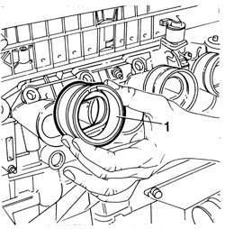

1072B54 sleeves connecting air capacity box to inlet manifold is - r+r
- Path
- Procedures > 10 ENGINE > 1072 INLET AND EXHAUST MANIFOLDS > 1072B inlet manifolds > 1072B54 sleeves connecting air capacity box to inlet manifold is - r+r
- Kind
- repair procedure (removal / refitting; the operation number is the code)
- Applies to
- engines: 1.6 TS ; all production periods
- Interactive page
- https://sloeber94.github.io/elrnDB-a156/en/#/3237696
Applies to: engines: 1.6 TS ; all production periods
 Removing
Removing
 Refitting
RefittingPlace the car on the lifting bridge.
Disconnect battery terminal (-).
7055B54 under-engine guard - r r
1076B50 exhaust pipe attachment to engine - r + r
1072B50 sleeves connecting air capacity box to inlet manifold is - r+r
Slacken fixing clamps of sleeves connecting box.
1. Remove sleeves from inlet manifold.

Applies to: engines: 1.6 TS ; all production periods
Refitting
RemovingInsert the four sleeves connecting box to inlet manifold and tighten their fixing clamps.
1072B50 sleeves connecting air capacity box to inlet manifold is - r+r
1076B50 exhaust pipe attachment to engine - r + r
7055B54 under-engine guard - r r
Connect battery terminal (-).
Topics linked from this page (3)
- 1072B50 sleeves connecting air capacity box to inlet manifold is - r+r
- 1076B50 exhaust pipe attachment to engine - r + r
- 7055B54 under-engine guard - r r